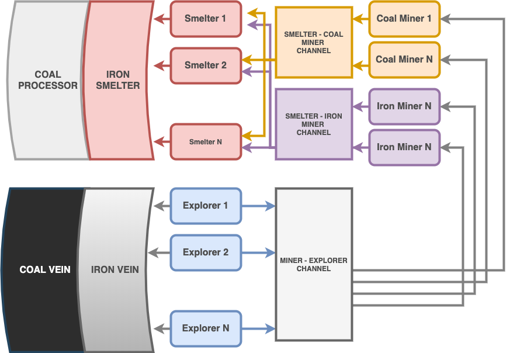

Concurrency
In computer science, concurrency is the ability to run workpieces sequentially in a way that does not affect the final result.
The ability to run the workpieces independently allows us to use the processor at maximum efficiency by executing the instructions in different cores.
Goroutines
Goroutines are functions in a task queue that waits to be executed by a system thread. To create a goroutine, we only need to write 'go' when running the function.
In the application below, every time the Work function is called it blocks the application until it is finished.
func Work(msg string) { fmt.Println(msg) time.Sleep(time.Second * 2) } func main() { Work("work work work work work work...") Work("zxcasfv") }
Let's run the blocking parts as goroutine.
func main() { go Work("work work work work work work...") go Work("zxcasfv") }
When we run the program, it will end without printing anything on the screen.
When the function main finishes it ends and the program closes without waiting
Work function to write something on the screen.
We can capture the output of Work function by adding a small delay at the end of the main function,
package main import ( "fmt" "time" ) func Work(msg string) { fmt.Println(msg) time.Sleep(time.Second * 2) } func main() { go Work("work work work work work work...") go Work("zxcasfv") time.Sleep(time.Second * 1) }
WaitGroup
In certain moments of the application, we may have to wait for some goroutines to end.
With WaitGroup, we can specify the number of goroutines we want to run and wait for them to finish their work.
All the goroutines need to do here is to run WaitGroup's Done method when it finishes.
func Work(msg string, wg *sync.WaitGroup) { time.Sleep(time.Second * 2) fmt.Println(msg) wg.Done() } func main() { nWorkers1, nWorkers2 := 5, 4 wg := &sync.WaitGroup{} wg.Add(nWorkers1) for i := 0; i < nWorkers1; i++ { go Work("work-1", wg) } wg.Wait() wg.Add(nWorkers2) for i := 0; i < nWorkers2; i++ { go Work("work-2", wg) wg.Wait() }
Channels
Channels allows us to communicate goroutines with each other.
In the above example, we cannot get the return value from the functions we run with go.
We can create channels to send the result of a goroutine to the main function or anoter goroutine.
Channels can be created as make(chan data_type, buffer).
func Work(msg string, ch chan string) { time.Sleep(time.Second * 2) ch <- msg } func main() { ch1 := make(chan string) go Work("work-1", ch1) go Work("work-2", ch1) for i := 0; i < 2; i++ { msg := <-ch1 fmt.Println(msg) } }
Mutex
Wikipedia Definition
In computer science, mutual exclusion is a property of concurrency control, which is instituted for the purpose of preventing race conditions. It is the requirement that one thread of execution never enters its critical section at the same time that another concurrent thread of execution enters its own critical section, which refers to an interval of time during which a thread of execution accesses a shared resource, such as shared memory.
func Click(counter *int, wg *sync.WaitGroup) { counter += 1 wg.Done() } func main() { counter := 0 nWorkers := 500 wg := &sync.WaitGroup{} wg.Add(nWorkers1) for i := 0; i < nWorkers1; i++ { go Click(&counter, wg) } wg.Wait() fmt.Println(counter) }
func Click(counter *int, wg *sync.WaitGroup) { mx.Lock() counter += 1 mx.Unlock() wg.Done() } func main() { counter := 0 mx := &sync.Mutex{} nWorkers := 500 wg := &sync.WaitGroup{} wg.Add(nWorkers) for i := 0; i < nWorkers; i++ { go Work(&counter, wg, mx) } wg.Wait() fmt.Println(counter) }
Select
Sending data to channels or waiting for data from channels blocks the application. Select allows us to await data from multiple channels.
In the example below, two goroutines continuously sending data to chan1 and chan2.
We can read all incoming messages from both channel by selecting both of them within
a infinite loop. When a message comes from any of the channels select will enter in
a case and handle the message and the for loop will start the selection process again.
chan1 := make(chan string) chan2 := make(chan string) go func() { for { time.Sleep(2 * time.Second) chan1 <- "one" } }() go func() { for { time.Sleep(1 * time.Second) chan2 <- "two" } }() for { select { case msg1 := <-chan1: fmt.Println(msg1) case msg2 := <-chan2: fmt.Println( msg2) } }
Adding Timeout
A program like above will be locked if no data is sent to both channels. To prevent this, we can add timeouts.
We can break the loop by waiting from another finite channel and then end the function when the case is matched.
Go has predefined channels for this kind of purposes. Time module has the time.After method which yields a result
after a certain delay.
chan1 := make(chan string) chan2 := make(chan string) go func() { for { time.Sleep(1 * time.Second) chan1 <- "one" } }() go func() { for { time.Sleep(2 * time.Second) chan2 <- "two" } }() for { select { case msg1 := <-chan1: fmt.Println(msg1) case msg2 := <-chan2: fmt.Println(msg2) case <-time.After(time.Second * 1): fmt.Println("🎵 Brave Sir Robin ran away 🎵") fmt.Println("🎵 Bravely ran away away 🎵") return } }
Example
A group of workers is working in a iron and coal mine deposit, where ores are explored, mined and processed.
In the application below, we can see how workers can work in parallel with the concurrency tools provided by the go language.

package main import ( "fmt" "strconv" "sync" "time" ) // Vein holds and yields ores type Vein struct { Ores []string } // Reveal shows the next ore in the mine func (vein *Vein) Reveal() (ore string) { if len(vein.Ores) == 0 { return } ore = vein.Ores[0] vein.Ores = vein.Ores[1:] return ore } // Worker can explore veins, mines or processes ores. type Worker struct { name string } // Find sends the next found ore in the mine to the miner channel func (w *Worker) Find(vein *Vein, ch chan<- string) { ore := vein.Reveal() if ore != "" { fmt.Println(w.name, "found", ore) time.Sleep(time.Second * 2) ch <- ore } } // Mine extracts the found ore and sends it to smelting channel func (w *Worker) Mine(finder <-chan string, smelter chan<- string) { for ore := range finder { fmt.Println(w.name, "mining", ore) time.Sleep(time.Second * 1) smelter <- ore } } // Smelt melts or processes the ore func (w *Worker) Smelt(coal_miner, iron_miner <-chan string, wg *sync.WaitGroup) { for { select { case coal_ore := <-coal_miner: time.Sleep(time.Second * 1) fmt.Println(w.name, "processed", coal_ore) case iron_ore := <-iron_miner: time.Sleep(time.Second * 2) fmt.Println(w.name, "smelted", iron_ore) } wg.Done() } } func main() { wg := &sync.WaitGroup{} // Create a Iron Vein with 100 ores in it n_iron_ores := 100 iron_vein := &Vein{make([]string, n_iron_ores)} for i := range iron_vein.Ores { iron_vein.Ores[i] = "iron-ore-" + strconv.Itoa(i) } // Create a Coal Vein with 50 ores in it n_coal_ores := 50 coal_vein := &Vein{make([]string, n_coal_ores)} for i := range coal_vein.Ores { coal_vein.Ores[i] = "coal-ore-" + strconv.Itoa(i) } // Create ore delivery channel between workers finder_to_miner := make(chan string) coal_miner_to_smelter := make(chan string) iron_miner_to_smelter := make(chan string) // Create ore explorers n_finders := 6 finders := make([]*Worker, n_finders) for i := range finders { finders[i] = &Worker{ name: "finder-" + strconv.Itoa(i), } } // Create ore miners n_miners := 50 miners := make([]*Worker, n_miners) for i := range miners { miners[i] = &Worker{ name: "miner-" + strconv.Itoa(i), } } // Create ore smelters n_smelters := 10 smelters := make([]*Worker, n_smelters) for i := range smelters { smelters[i] = &Worker{ name: "smelter-" + strconv.Itoa(i), } } // Send half of the explorers to find ores in coal vein // and other half to iron vein for i := 0; i < n_iron_ores+n_coal_ores; i++ { wg.Add(1) finder_idx := i % len(finders) go finders[finder_idx].Find(coal_vein, finder_to_miner) go finders[finder_idx].Find(iron_vein, finder_to_miner) } // Assing half of the miners to mine iron ores and the other half to coal for i, miner := range miners { if i%2 == 0 { go miner.Mine(finder_to_miner, iron_miner_to_smelter) } else { go miner.Mine(finder_to_miner, coal_miner_to_smelter) } } // Start working the smelters for _, smelter := range smelters { go smelter.Smelt(coal_miner_to_smelter, iron_miner_to_smelter, wg) } // Wait for all ores to be found, mined and smelted wg.Wait() }